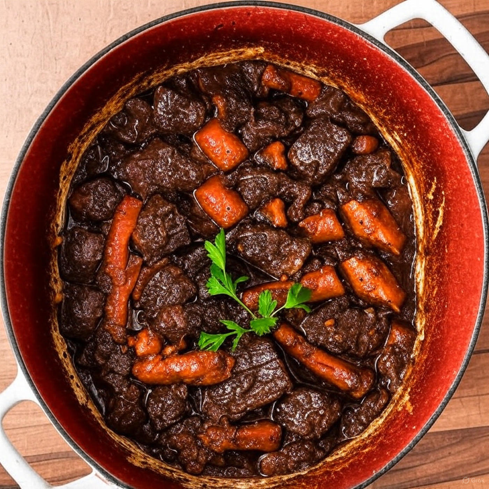

Home
Braised Beef Chuck Roast

Braised Beef Chuck Roast
A perfectly braised beef chuck roast requires a low and slow cooking process to become melt-in-your-mouth tender. The vital steps include browning the meat for deep flavor, developing a rich braising liquid with aromatic vegetables, and cooking it gently in a covered pot or Dutch oven for several hours.
This recipe will utilize a mirepoix, which is a French flavor base that utilizes onions, carrots, and celery in a 2:1:1 ratio. The mirepoix is cooked gently in butter over low heat in a process called sweating in order to soften them and release their flavors. This aromatic combination serves as the aromatic base to the braising liquid for the seared chuck roast.
Ingredients:
- 3-4 lb beef chuck roast
- 2 tbsp olive oil
- 2 tbsp butter
- 1 large onion, diced
- 2 carrots, chopped
- 2 celery stalks, chopped
- 6-8 garlic cloves, smashed
- 2 tbsp tomato paste
- 1 cup dry red wine (like Cabernet Sauvignon or Merlot)
- 3 cups of beef stock
- 2 bay leaves
- Fresh rosemary and thyme
- Kosher salt and ground black pepper to taste
Instructions:
- Prep the roast: Pat the chuck roast down with paper towels to dry it and season the it generously with salt and pepper. Allow the chuck roast to come to room temperature and for the applied seasonings to equilibrate and distribute in the meat (~30-45 minutes).
- Sear the beef: Add the olive oil to the dutch oven or oven safe pot over medium-high heat. Sear the meat on all sides until a deep, golden-brown crust forms. This usually takes 7-10 minutes and is essential to creating big flavors. Remove the cooked meat and set aside. Preheat your oven between 300-325°F.
- Saute the aromatics: Lower the heat to medium and add the butter, diced onions, chopped carrots and celery to the pot for about 5-6 minutes or until softened. Add the mashed garlic and cook until fragrant, about 1 minute. Add the tomato paste and cook for 1 additional minute.
- Deglaze the pot: Add the red wine to the pot to deglaze the browned bits ("fond") at the bottom of the pot using a wooden spoon to help scrape up the browned bits. Let it simmer until the wine reduces to about half of the original volume.
- Braise: Add the beef stock, the bay leaves, fresh rosemary and thyme to the pot. Put the seared chuck roast back in the pot submerging it in the braising liquid. It should be at least 2/3 submerged and turn the heat up so that the liquid starts to simmer.
- Transfer to the oven: Cover the pot with a tight fitting lid and place it into the pre-heated oven (300-325°F). Braise in the oven for 3-4 hours, or until the meat is fork-tender and easily shreds.
- Rest and serve: Remove the pot from the oven and move the roast to a platter. Allow it to rest for about 10 minutes. Remove the bay leaves and herb springs. To make a thicker gravy, the fat in pot can be skimmed and this remaining braising liquid can be simmered until it reduces.